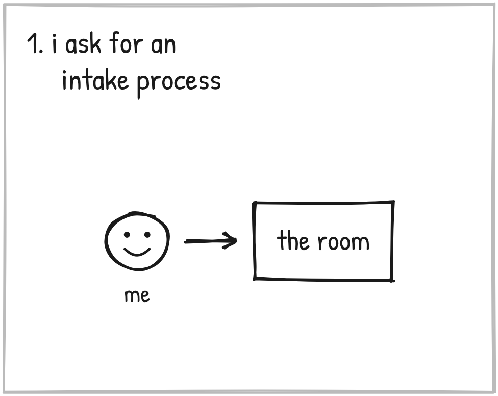
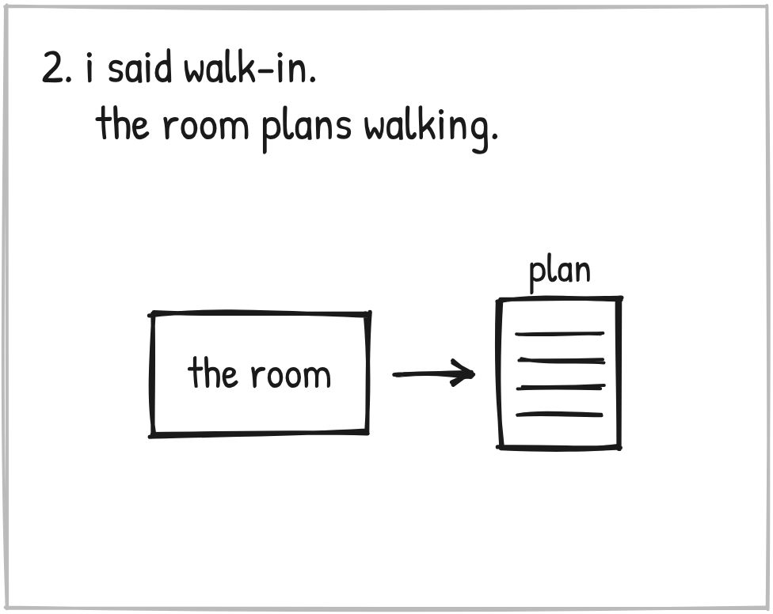
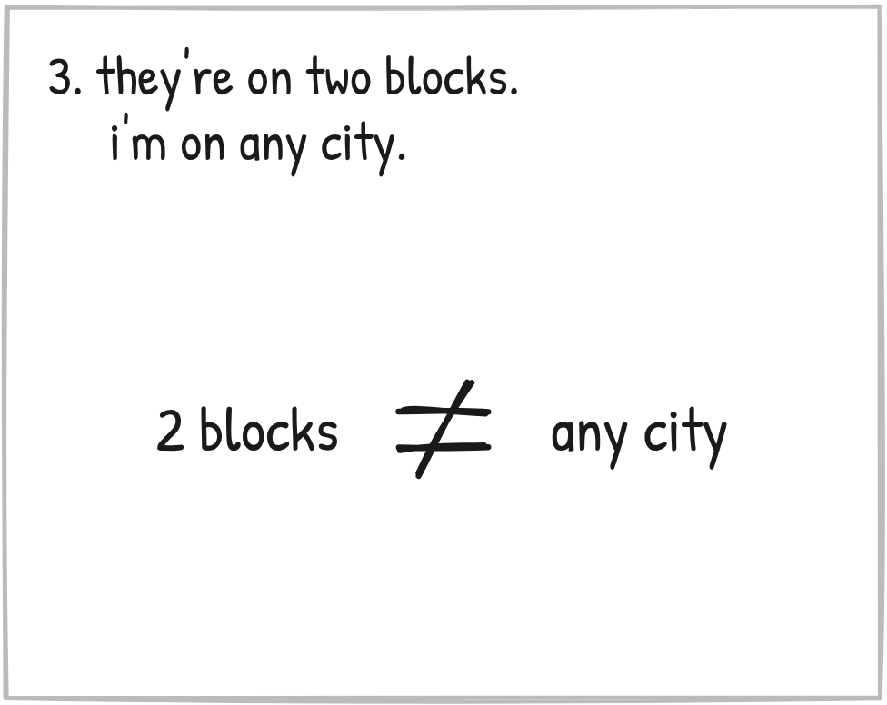
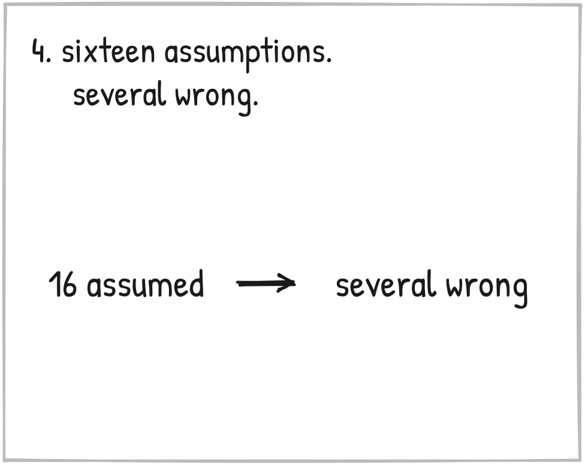
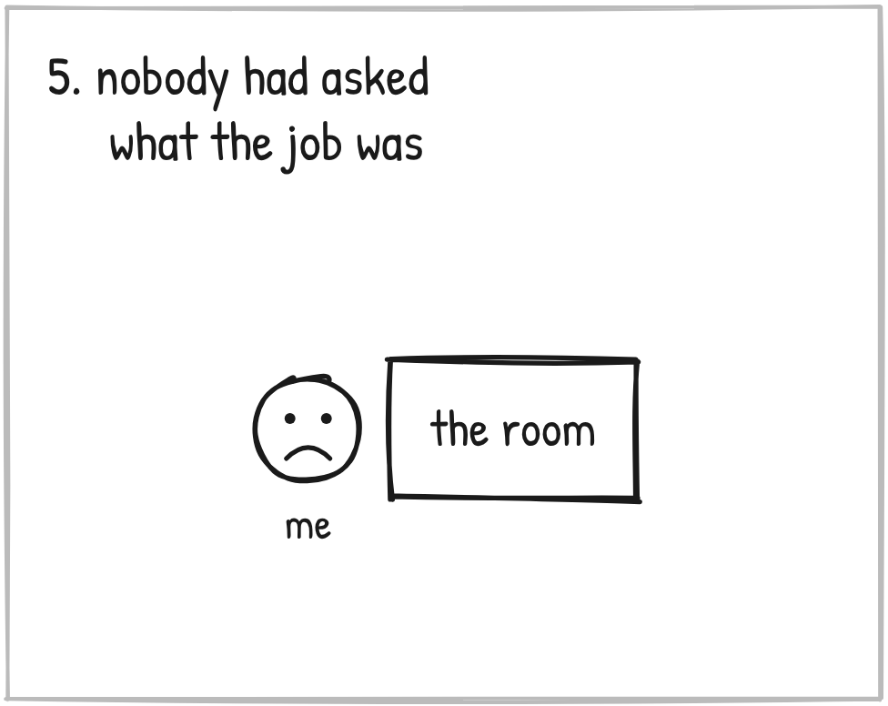
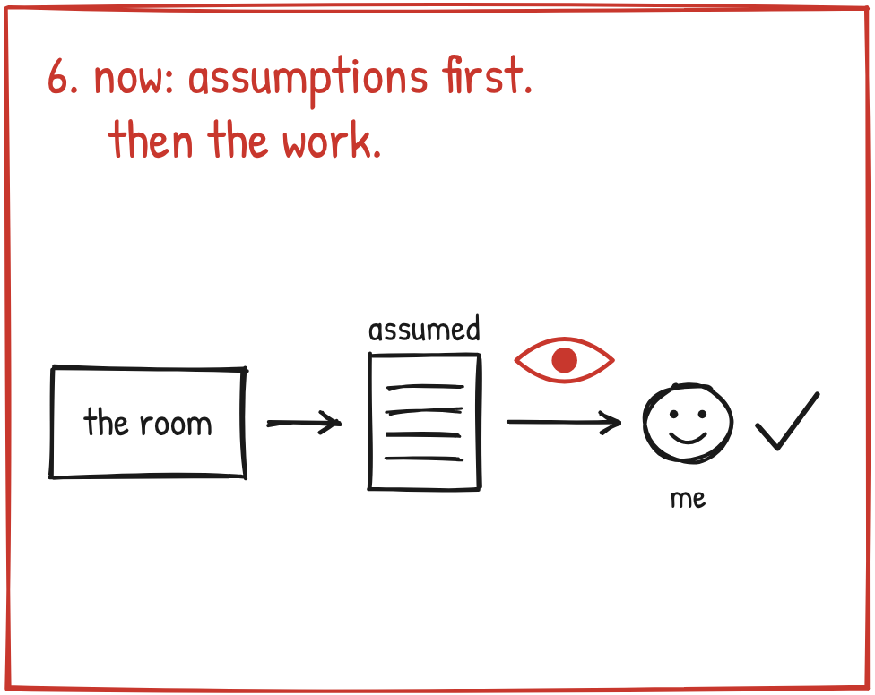

Ever hand off a job, come back, and find good work on the wrong thing?
October 10. That was me.

I'd asked a room full of marketers for one thing. An intake process for local businesses, starting with a walk-in.
None of them were real. I call it the council. It's Claude answering as Dan Kennedy, Alex Hormozi, Chet Holmes and others, each from that person's own material.

I'd said walk-in. So the room planned walking.
For hours. Two or three blocks at a time.

Here's what I had in my head.
A Dream 100. You pick the hundred businesses you most want, by hand, and you go after those.
At scale. Not only on foot.
100 or more businesses a week, in any city.
I corrected the room more than once.
Then one seat brought up the 97 percent of owners who aren't buying yet, and the room started building on that. Still on foot.
That's when I heard it. I told the room:
"That detail coming out in terms of how people were brainstorming here informed me that we were thinking on different levels. I'm thinking more Dream 100 the whole time, not walking two or three blocks the whole time and just trying to make something happen."

So the assumptions went on the table. Late.
Sixteen of them.
Several were wrong. At the same time.

Hours of work. And nobody had asked what the job was.
So here's the lesson.
Your AI doesn't start on your job. It starts on the job it ASSUMED.

So now nothing starts until the assumptions are on the table. Who it's for. What we're making. Why. When. Where. How. How many and how much.
Each one says where it came from. My words, a settled decision, or a guess. A guess gets labeled a guess.
I mark each one right, wrong, or don't know yet. Then the work starts.
I call it the Assumptions Gate.
It needed one limit, and on October 31 I added it. The gate is for the shape of a job. Never the creative details. Claude doesn't stop in the middle of a draft to ask.
It's still running. On November 2 a registration page job opened with eleven numbered assumptions.
Mine was two blocks against any city.
What's yours? Who it's for? What you're selling? How big you're thinking?
Before it writes a word, have it tell you what it's assuming.